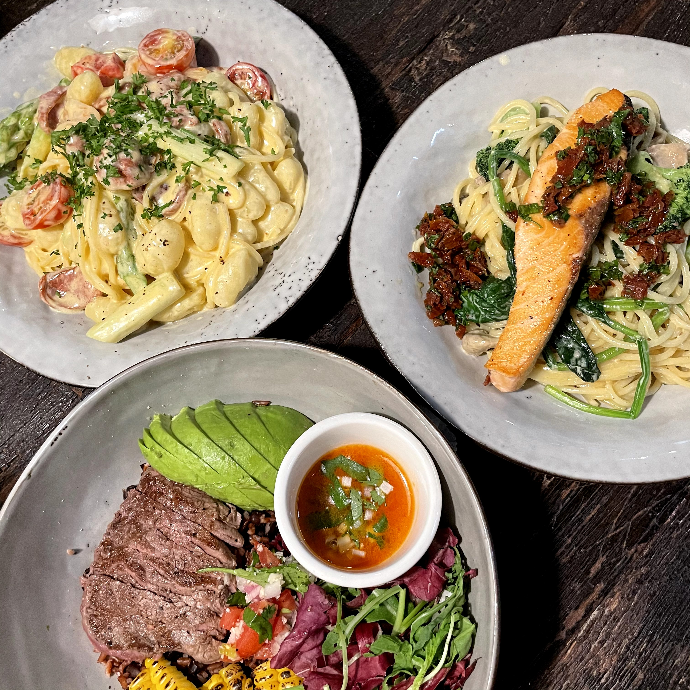
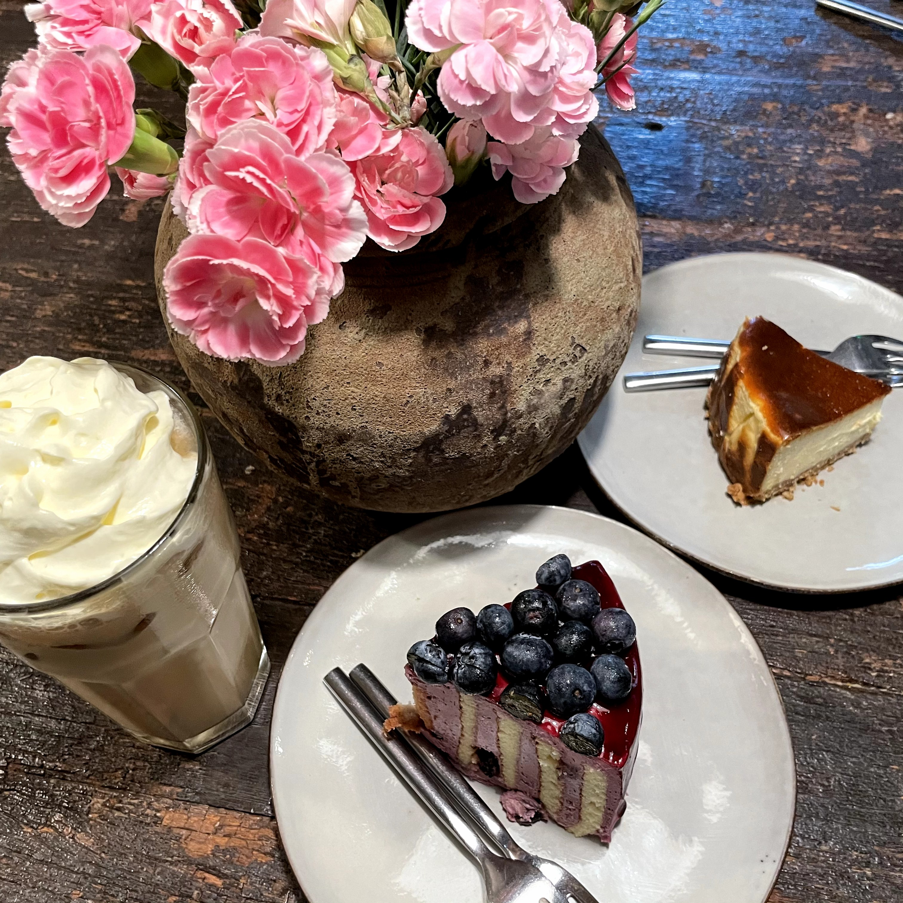
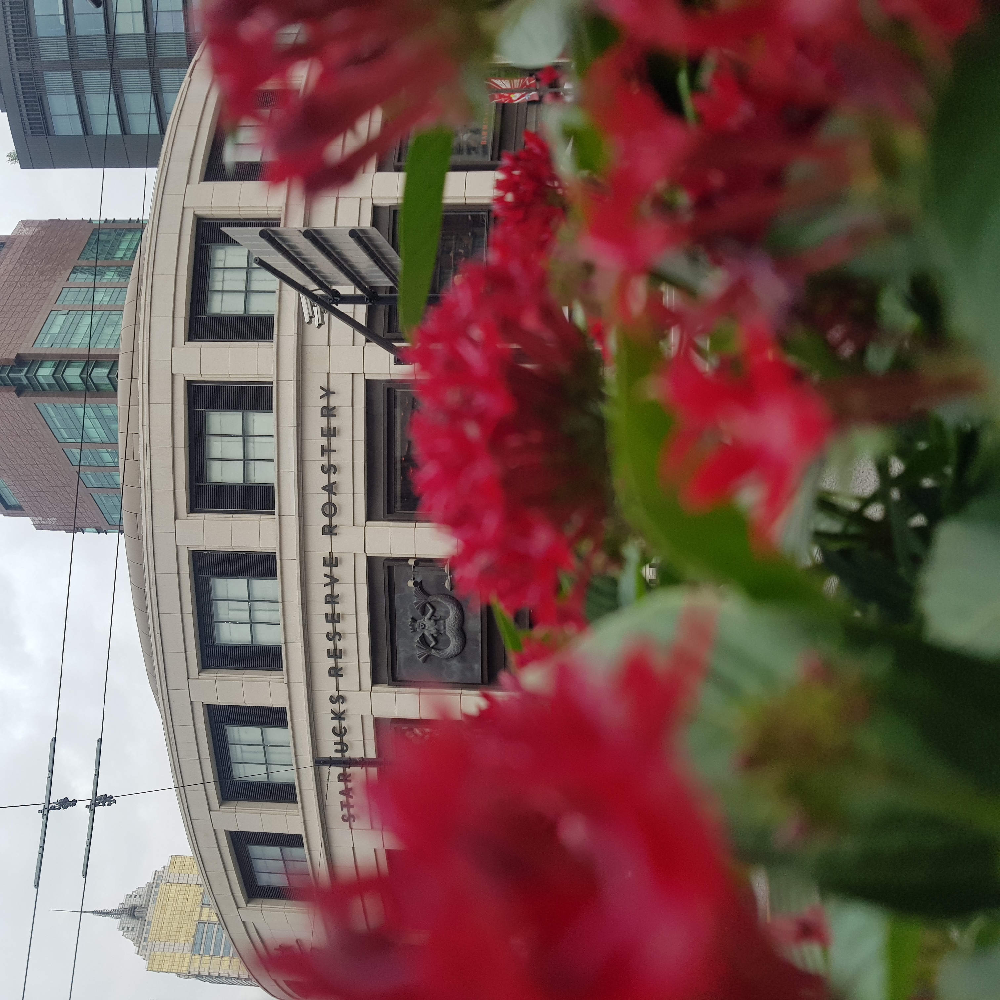
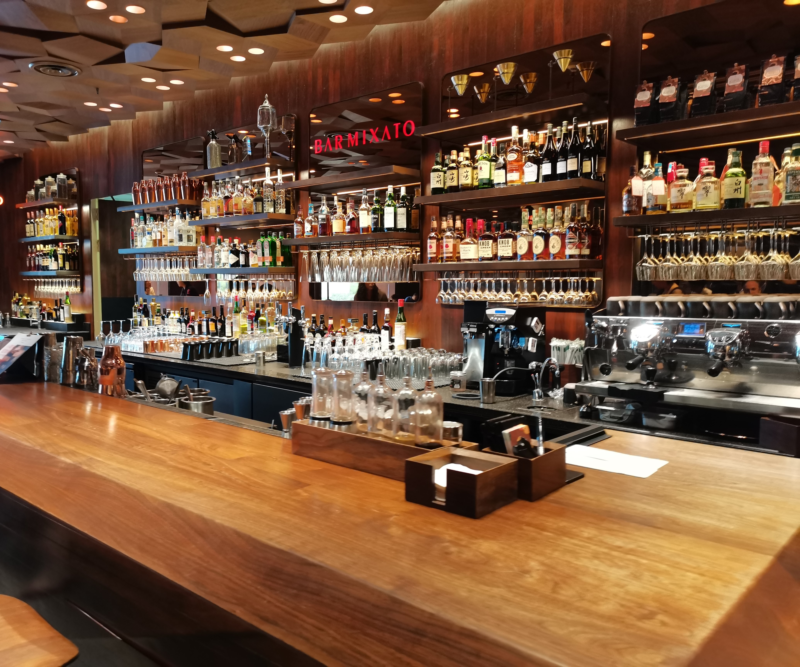
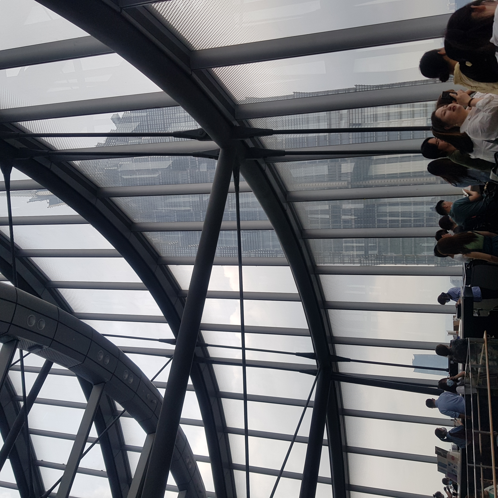
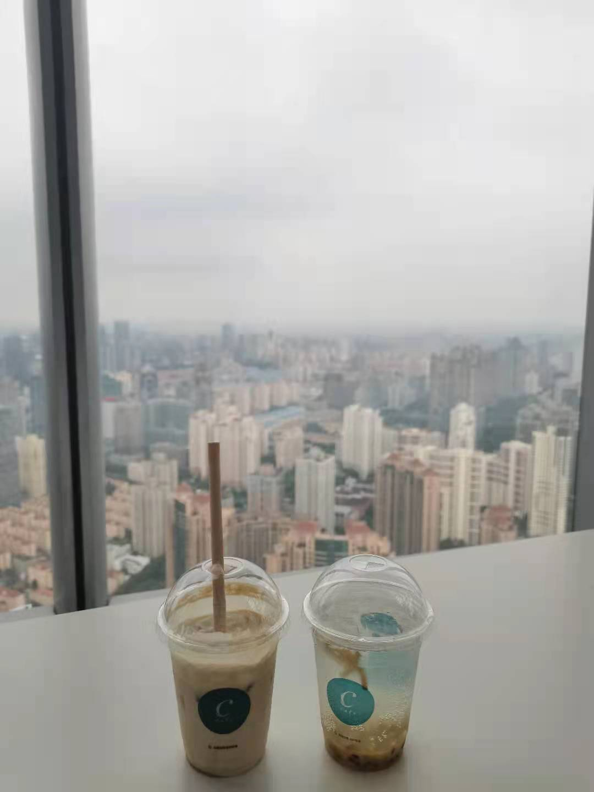
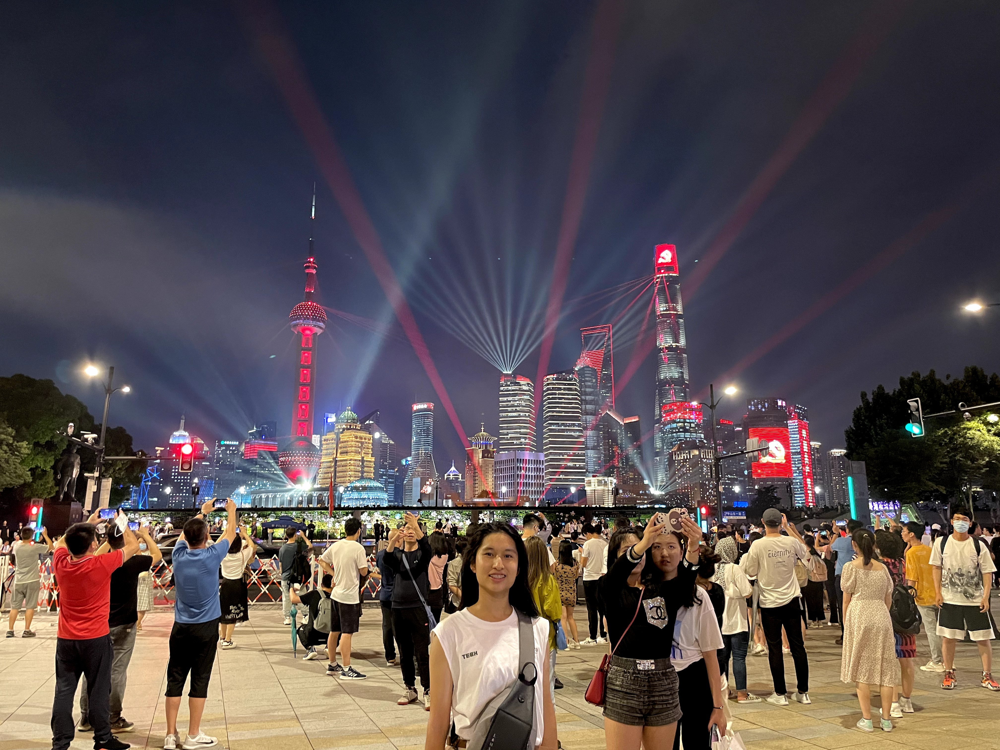

A global city for finance, innovation, commerce, and trade. A morden city. Colorful nightlife. Qick tempo city. Wukang Road Everyone’s impression of Shanghai might be prosperous city and hubbub urban block. However, here in Wukang Road you can only feel pleased and low tempo environment where are many residences live around there. Moreover, the side walk there is really clean and it's really quite also! Sometimes, you may see some exquisite shops and brunch restaurants in the old building. Overall, the hole environment let people feel comfortable and chill. Brunch In Wukang Road there is a nice brunch restaurant I recommend you. It’s called LOKAL. The payment there is not that cheep but the quantity and quality are perfect! If you have a chance to go there, I strongly recommend you to have a great meal there!   Thames Town An exotic place with many England architectures. There is a famous library there, it included many kinds of books. And the feature of the library is its directory, everywhere is full of books. Guangfulin Cultural Site Park A place with different kind of countries’ buildings and the ancient civilization which initially confirmed in scientific archaeology. It’s hard to think that in a busy city having an ancient civilization. In addition, there are many museums which combine modern audio-visual technology to design the archaelolgical memory of Guangfulin. Starbucks Reserve There are only 6 Starbucks Reserve in the world. And Shanghai has one which including wine, tea, coffee and the first stop for coffee beans at the Roastery. The most attracting thing is that it’s really beautiful!   Duoyun Books The world highest library, Duoyun Books, has a wonderful view to see part of Shanghai. Moreover, the building there is one of the most important offices in Shanghai.   Night in Shanghai It still has a lively life in the night at Shanghai. Shopping, staying at the bar, enjoying the scenery and so on. Just come and see! 